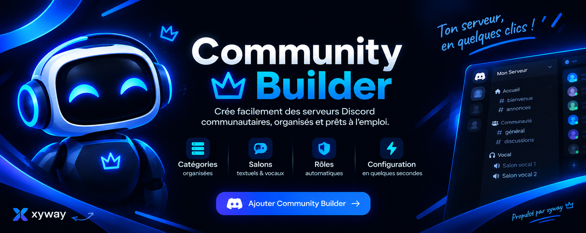

▤
01 / STRUCTURE
Catégories organisées
Regroupe les salons par thème pour que les membres trouvent facilement leur chemin.
Prépare une communauté bien organisée avec une structure claire, des salons adaptés et des rôles prêts à personnaliser.

Community Builder t’aide à mettre en place les fondations de ton serveur, pour que tu puisses te concentrer sur ta communauté.
Regroupe les salons par thème pour que les membres trouvent facilement leur chemin.
Prévois des espaces dédiés aux annonces, discussions, règles et contenus de ta communauté.
Organise les salons vocaux pour permettre aux membres de se retrouver et discuter.
Prépare une base de rôles et ajuste ensuite les noms et permissions à ton fonctionnement.
ⓘ Les fonctions exactes dépendent de la version du bot et des permissions accordées sur ton serveur.
Commence par un serveur de test, vérifie la structure créée, puis personnalise-la à ton image.
Passer à l’étape suivante →Choisis un serveur de test ou sauvegarde ta structure avant de faire des changements importants.
Utilise ton lien d’invitation officiel et accorde uniquement les permissions nécessaires.
Vérifie les salons, les rôles et les accès avant d’ouvrir ton serveur à tout le monde.
Ajoute le bot à ton serveur Discord et commence à préparer ta structure.
Inviter Community Builder ↗ Le lien d’invitation doit être configuré par le propriétaire du bot.